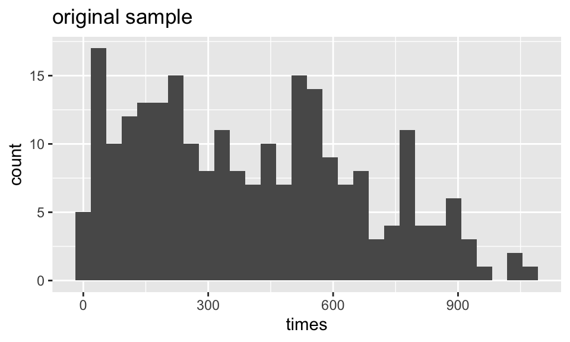
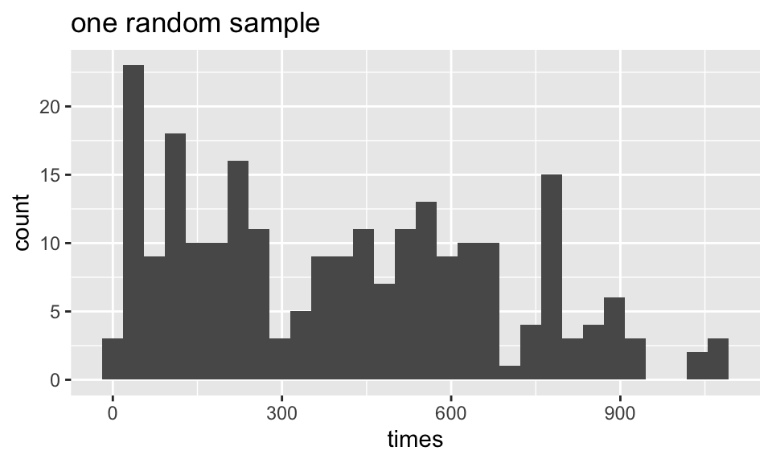
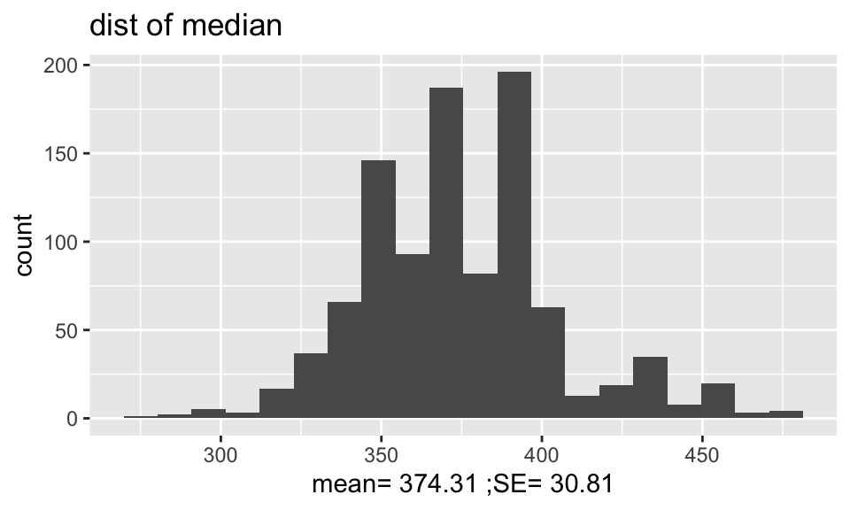
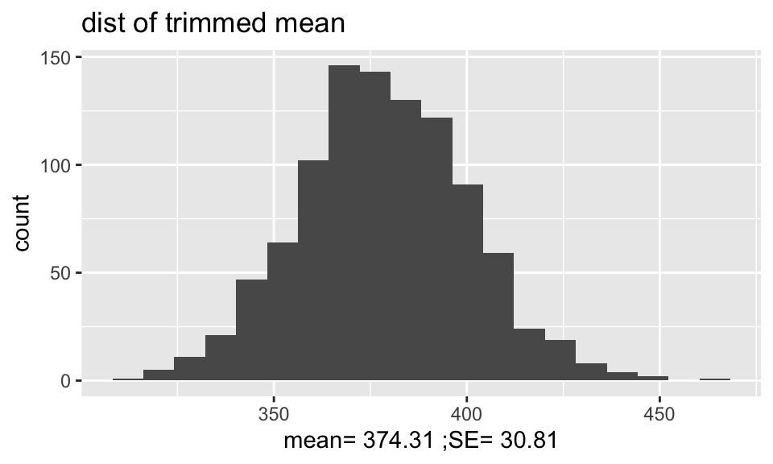

Chapter 6 Bootstrapping
6.1 10/8/19 Agenda
- Review: logic of confidence intervals
- Logic of bootstrapping (resample from the sample with replacement)
- BS SE of a statistic
6.2 Introduction
As we did with permutation tests, we are going to use random samples to describe the population (assuming we have a simple random sample).
Main idea: we will be able to estimate the variability of our estimator (difference in medians, ordinary least square with non-normal errors, etc.).
- It’s not so strange to get \(\hat{\theta}\) and SE(\(\hat{\theta}\)) from the data (consider \(\hat{p}\) & \(\sqrt{\hat{p}(1-\hat{p})/n}\) and \(\overline{X}\) & \(s/\sqrt{n}\)).
- We’ll only consider confidence intervals for now.
- Bootstrapping doesn’t help get around small samples.
The following applets may be helpful:
- The logic of confidence intervals http://www.rossmanchance.com/applets/ConfSim.html
- Bootstrapping from actual datasets http://lock5stat.com/statkey/index.html
6.3 Basics & Notation
Let \(\theta\) be the parameter of interest, and let \(\hat{\theta}\) be the estimate of \(\theta\). If we could, we’d take lots of samples of size \(n\) from the population to create a sampling distribution for \(\hat{\theta}\). Consider taking \(B\) random samples from \(F\):
\[\begin{align} \hat{\theta}(\cdot) = \frac{1}{B} \sum_{i=1}^B \hat{\theta}_i \end{align}\] is our best guess for \(\theta\). If \(\hat{\theta}\) is very different from \(\theta\), we would call it biased. \[\begin{align} SE(\hat{\theta}) &= \bigg[ \frac{1}{B-1} \sum_{i=1}^B(\hat{\theta}_i - \hat{\theta}(\cdot))^2 \bigg]^{1/2}\\ q_1 &= [0.25 n] \ \ \ \ \hat{\theta}^{(q_1)} = \mbox{25}\% \mbox{ cutoff}\\ q_3 &= [0.75 n] \ \ \ \ \hat{\theta}^{(q_3)} = \mbox{75}\% \mbox{ cutoff}\\ \end{align}\]
If we could, we would completely characterize the sampling distribution (as a function of \(\theta\)) which would allow us to make inference on \(\theta\) when we only had \(\hat{\theta}\).
Figure 1.2: From Hesterberg et al., Chapter 16 of Introduction to the Practice of Statistics by Moore, McCabe, and Craig
6.3.1 The Plug-in Principle
Recall \[\begin{align} F(x) &= P(X \leq x)\\ \hat{F}(x) &= S(x) = \frac{\# \{X_i \leq x\} }{n} \end{align}\] \(\hat{F}(x)\) is a sufficient statistic for \(F(x)\). That is, all the information about \(F\) that is in the data is contained in \(\hat{F}(x)\). Additionally, \(\hat{F}(x)\) is the MLE of \(F(x)\) (they are both probabilities, so it’s a binomial argument).
Note that, in general, we are interested in a parameter, \(\theta\). \[\begin{align} \theta = t(F) \ \ \ \ [\mbox{e.g., } \mu = \int x f(x) dx ] \end{align}\]
The plug-in estimate of \(\theta\) is: \[\begin{align} \hat{\theta} = t(\hat{F}) \ \ \ \ [\mbox{e.g., } \overline{X} = \frac{1}{n} \sum X_i ] \end{align}\]
That is: to estimate a parameter, use the statistic that is the corresponding quantity for the sample.
\[\begin{align} \mbox{Ideal Real World} & \mbox{Boostrap World}\\ F \rightarrow x &\Rightarrow \hat{F} \rightarrow x^*\\ \downarrow & \downarrow\\ \hat{\theta} & \hat{\theta}^* \end{align}\]
The idea of boostrapping (and in fact, the bootstrap samples themselves), depends on the double arrow. We must have a random sample: that is, \(\hat{F}\) must do a good job of estimating \(F\) in order for bootstrap concepts to be meaningful.
Note that you’ve seen the plug-in-principle before: \[\begin{align} \sqrt{\frac{p(1-p)}{n}} &\approx& \sqrt{\frac{\hat{p}(1-\hat{p})}{n}}\\ \end{align}\]
6.3.2 The Bootstrap Idea
We can resample from the sample to represent samples from the actual population! The boostrap distribution of a statistic, based on many resamples, represents the sampling distribution of the statistic based on many samples. Is this okay?? What are we assuming?
As \(n \rightarrow \infty\), \(\hat{F}(x) \rightarrow F(x)\)
As \(B \rightarrow \infty\), \(\hat{F}(\hat{\theta}^*) \rightarrow F(\hat{\theta})\) (with large \(n\)). Or really, what we typically see if \(\hat{F}(\hat{\theta}^* / \hat{\theta}) \rightarrow F(\hat{\theta} / \theta)\) or \(\hat{F}(\hat{\theta}^* - \hat{\theta}) \rightarrow F(\hat{\theta} - \theta)\)
6.3.3 Bootstrap Procedure
- Resample data with replacement.
- Calculate the statistic of interest for each resample.
- Repeat 1. and 2. \(B\) times.
- Use the bootstrap distribution for inference.
In R:
install.packages('bootstrap')
library(bootstrap)
install.packages('boot')
library(boot)
?bootstrap
?boott
?bootpred6.3.4 Bootstrap Notation
Take lots (\(B\)) of sample of size n from the sample, \(\hat{F}(x)\) (instead of from the population, \(F(x)\) ) to create a bootstrap distribution for \(\hat{\theta}^*\) (instead of the sampling distribution for \(\hat{\theta}\)).
Let \(\hat{\theta}^*(b)\) be the calculated statistic of interest for the \(b^{th}\) bootstrap sample. Our best guess for \(\theta\) is: \[\begin{align} \hat{\theta}^* = \frac{1}{B} \sum_{b=1}^B \hat{\theta}^*(b) \end{align}\] (if \(\hat{\theta}^*\) is very different from \(\hat{\theta}\), we call it biased.) And the estimated value for the standard error of our estimate is \[\begin{align} \hat{SE}^* = \bigg[ \frac{1}{B-1} \sum_{b=1}^B ( \hat{\theta}^*(b) - \hat{\theta}^*)^2 \bigg]^{1/2} \end{align}\]
Just like repeatedly taking samples from the population, taking resamples from the sample allows us to characterize the bootstrap distribution which approximates the sampling distribution. The bootstrap distribution approximates the shape, spread, & bias of the actual sampling distribution.
Figure 1.3: From Hesterberg et al., Chapter 16 of Introduction to the Practice of Statistics by Moore, McCabe, and Craig. The left image represents the mean with n=50. The center image represents the mean with n=9. The right image represents the median with n=15.
6.4 10/10/19 Agenda
- Normal CI using BS SE
- Bootstrap-t (studentized) CIs
- Percentile CIs
- properties / advantages / disadvantages
The StatKey applets which demonstrate bootstrapping are here: http://www.lock5stat.com/StatKey/
6.5 Bootstrap Confidence Intervals
6.5.1 Normal (standard) CI with BS SE: type="norm"
Keep in mind that what we are trying to do is approximate the sampling distribution of \(\hat{\theta}\). In fact, what we are really able to do here is to estimate the sampling distribution of \(\frac{\hat{\theta} - \theta}{SE(\hat{\theta})}\). We hope that:
\[\begin{align} \hat{F}\Big(\frac{\hat{\theta}^*(b) - \hat{\theta}}{\hat{SE}^*(b)} \Big) \rightarrow F\Big(\frac{\hat{\theta} - \theta}{SE(\hat{\theta})}\Big) \end{align}\]
Recall the derivation of conventional confidence intervals (based on the assumption that the sampling distribution of the test statistic is normal or close):
\[\begin{align} P\bigg(z_{(\alpha/2)} \leq \frac{\hat{\theta} - \theta}{SE(\hat{\theta})} \leq z_{(1-\alpha/2)}\bigg)&= 1 - \alpha\\ P\bigg(\hat{\theta} - z_{(1-\alpha/2)} SE(\hat{\theta}) \leq \theta \leq \hat{\theta} - z_{(\alpha/2)} SE(\hat{\theta})\bigg) &= 1 - \alpha\\ \end{align}\]
That is, it’s the endpoints that are random, and we have a 0.95 probability that we’ll get a random sample which will produce endpoints which will capture the true parameter.
A 95% CI for \(\theta\) would then be: \[\hat{\theta} \pm z_{(\alpha/2)} \hat{SE}^*\]
6.5.2 Bootstrap-t Confidence Intervals: type="stud"
(The idea here is that we are calculating the “t-multiplier” that is used in the CI. It was William Gosset who went my the pseudonym of “Student” who originally figured out the distribution of the t-multiplier, so the following intervals are called either “studentized” or “t” bootstrap confidence intervals.)
Recall the derivation of conventional confidence intervals:
\[\begin{align} P\bigg(z_{(\alpha/2)} \leq \frac{\hat{\theta} - \theta}{SE(\hat{\theta})} \leq z_{(1-\alpha/2)}\bigg)&= 1 - \alpha\\ P\bigg(\hat{\theta} - z_{(1-\alpha/2)} SE(\hat{\theta}) \leq \theta \leq \hat{\theta} - z_{(\alpha/2)} SE(\hat{\theta})\bigg) &= 1 - \alpha\\ \end{align}\]
That is, it’s the endpoints that are random, and we have a 0.95 probability that we’ll get a random sample which will produce endpoints which will capture the true parameter.
We could simply use the BS SE within the CI formula (and did for the interval above). The problem is that such an interval will only be accurate if the distribution for \(\hat{\theta}\) is reasonably normal. If there is any bias or skew, the CI will not have desired coverage levels (Efron and Tibshirani (1993), pg 161 and chapter 22).
Now consider using the bootstrap to estimate the distribution for \(\frac{\hat{\theta} - \theta}{SE(\hat{\theta})}\). \[\begin{align} T^*(b) &= \frac{\hat{\theta}^*(b) - \hat{\theta}}{\hat{SE}^*(b)} \end{align}\]
where \(\hat{\theta}^*(b)\) is the value of \(\hat{\theta}\) for the \(b^{th}\) bootstrap sample, and \(\hat{SE}^*(b)\) is the estimated standard error of \(\hat{\theta}^*(b)\) for the \(b^{th}\) bootstrap sample. The \(\alpha^{th}\) percentile of \(T^*(b)\) is estimated by the value of \(\hat{t}_\alpha\) such that
\[\begin{align} \frac{\# \{T^*(b) \leq \hat{t}_{\alpha/2} \} }{B} = \alpha/2 \end{align}\]
For example, if \(B=1000\), the estimate of the 5% point is the \(50^{th}\) smallest value of the \(T^*(b)\)s, and the estimate of the 95% point is the \(950^{th}\) smallest value of the \(T^*(b)\)s.
Finally, the boostrap-t confidence interval is: \[\begin{equation} (\hat{\theta} - \hat{t}_{1-\alpha/2}\hat{SE}^*, \hat{\theta} - \hat{t}_{\alpha/2}\hat{SE}^*) \tag{6.1} \end{equation}\]
To find a bootstrap-t interval, we have to bootstrap twice. The algorithm is as follows:
Generate \(B_1\) bootstrap samples, and for each sample \(\underline{X}^{*b}\) compute the bootstrap estimate \(\hat{\theta}^*(b)\).
Take \(B_2\) bootstrap samples from \(\underline{X}^{*b}\), and estimate the standard error, \(\hat{SE}^*(b)\).
Find \(B_1\) values for \(T^*(b)\). Calculate \(\hat{t}_\alpha/2\) and \(\hat{t}_{1-\alpha/2}\).
Calculate the CI as in equation ((6.1)).
If \(B\cdot \alpha\) is not an integer, use \(k=\lfloor (B+1) \alpha \rfloor\) and \(B+1-k\).
Bootstrap-t intervals are somewhat erratic and can be influenced by a few outliers. Percentile methods can be more reliable. [The balance of which is best when is an open question depending a lot on the data distribution and statistic of interest.]
\(B=100\) or 200 is probably not enough for a bootstrap-t CI (500 or 1000 is better). However, \(B=25\) may be enough to estimate the SE in the inner-BS procedure. (\(B=1000\) is needed for computing percentiles.)
In choosing the appropriate multiplier:
- When it is the correct multiplier to use, the normal multiplier (\(z\)) is good for all \(n\) and all samples.
- When it is the correct multiplier to use, the t multiplier is good for all samples but a specified \(n\).
- When it is the correct multiplier to use, the bootstrap-t multiplier is good for *this} sample only.
The resulting intervals will typically not be symmetric (that is \(\hat{t}_\alpha \ne - \hat{t}_{1-\alpha}\)). This is part of the improvement over \(z\) or \(t\) intervals.
Bootstrap-t intervals are good for location statistics (mean, quantiles, trimmed means) but cannot be trusted for other statistics like the correlation (which do not necessarily vary based on ideas of shift).
6.5.3 Percentile Confidence Intervals: type="perc"
The interval between the \(\alpha/2\) and \(1-\alpha/2\) quantiles of the bootstrap distribution of a statistic is a \((1-\alpha)100\%\) bootstrap percentile confidence interval for the corresponding parameter:
\[\begin{align} [\hat{\theta}^*_{\alpha/2}, \hat{\theta}^*_{1-\alpha/2}] \end{align}\]
You do not need to know why the percentile interval works… but isn’t it so cool to see how it works???
Why does it work? It isn’t immediately obvious that the interval above will capture the true parameter, \(\theta\), at a rate or 95%. Consider a skewed sampling distribution. If your \(\hat{\theta}\) comes from the long tail, is it obvious that the short tail side of your CI will get up to the true parameter value at the correct rate? (Hall (*The Bootstrap and Edgeworth Expansion}, Springer, 1992, and earlier papers) refers to these as Efron’s “backwards” intervals.) Or, if your sampling distribution is biased, the percentiles of the bootstrap interval won’t capture the parameter with the correct rate.
To see how / why percentiles intervals work, we first start by considering normal sampling distributions for a function of our statistic. Let \(\phi = g(\theta), \hat{\phi} = g(\hat{\theta}), \hat{\phi}^* = g(\hat{\theta}^*)\), where g is a monotonic function (assume wlog that g is increasing). The point is to choose (if possible) \(g(\cdot)\) such that
\[\begin{equation} \hat{\phi}^* - \hat{\phi} \sim \hat{\phi} - \phi \sim N(0, \sigma^2) \tag{6.2}. \end{equation}\] Again, consider the logic for the conventional confidence interval. Because \(\hat{\phi} - \phi \sim N(0, \sigma^2)\), the interval for \(\theta\) is derived by:
\[\begin{align} P(z_{0.05} \leq \frac{\hat{\phi} - \phi}{\sigma} ) = 0.95 \nonumber \\ P(-\infty \leq \phi \leq \hat{\phi} - z_{0.05} \sigma) = 0.95 \nonumber \\ P(-\infty \leq \phi \leq \hat{\phi} + z_{0.95} \sigma) = 0.95 \nonumber \\ P(-\infty \leq \theta \leq g^{-1}(\hat{\phi} + z_{0.95} \sigma)) = 0.95 \nonumber \\ \Rightarrow \mbox{CI for } \theta: \ \ \ (-\infty, g^{-1}(\hat{\phi} + \sigma z_{1-\alpha})) \tag{6.3} \end{align}\]
where \(z_{1-\alpha}\) is the \(100(1-\alpha)\) percent point of the standard normal distribution. Ideally, if we knew \(g\) and \(\sigma\), we’d be able to do the transformation and find \(g^{-1}(\hat{\phi} + \sigma z_{1-\alpha})\) (which would give the endpoint of the confidence interval).
Going back to ((6.2)) indicates that \(\hat{\phi} + \sigma z_{1-\alpha} = F^{-1}_{\hat{\phi}^*}(1-\alpha)\) (because \(\hat{\phi} ^* \sim N(\hat{\phi}, \sigma^2)\)). Further, since \(g\) is monotonically increasing, \(F^{-1}_{\hat{\phi}^*}(1-\alpha) = g(F^{-1}_{\hat{\theta}^*}(1-\alpha)).\) Substituting in ((6.3)), gives the percentile interval for \(\theta\),
\[\begin{align} (-\infty, F^{-1}_{\hat{\theta}^*}(1-\alpha)). \end{align}\]
(A similar argument gives the same derivation of the two sided confidence interval. Proof from Carpenter and Bithell (2000)) In order for a percentile interval to be appropriate, we simply need to know that a normalizing transformation exists. We do not need to actually find the transformation!
The transformation respecting property A CI is transformation respecting if, for any monotone transformation, the CI for the transformed parameter is simply the transformed CI for the unstransformed parameter. Let \(\phi = m(\theta)\).
\[\begin{align} [\phi_{lo}, \phi_{up}] = [m(\theta_{lo}), m(\theta_{up})] \end{align}\]
Note that the idea has to do with the process of creating the CI. That is, if we create the confidence interval using \(\phi\), we’ll get the same thing as if we created the CI using \(\theta\) and then transformed it. It is straightforward to see that the percentile CI is transformation respecting. That is, for any monotone transformation of the statistic and parameter, the CI will be transformed appropriately.
Let \[\begin{align} \hat{\phi} &= 0.5 \ln\bigg(\frac{1+r}{1-r}\bigg)\\ r &=\frac{e^{2\phi}+1}{e^{2\phi}-1}\\ \end{align}\]
We know that \(\hat{\phi}\) does have an approximated normal distribution. So, the percentile CI for \(\phi\) will approximate the normal theory CI which we know to be correct (for a given \(\alpha\)). But once we have a CI for \(\phi\) we can find the CI for \(\rho\) by taking the inverse monotonic transformation; or rather… we can just use the r percentile CI to start with!
The range preserving property Another advantage of the percentile interval is that it is range preserving. That is, the CI always produces endpoints that fall within the allowable range of the parameter.
Bias The percentile interval is not, however, perfect. If the statistic is a biased estimator of the parameter, there will not exist a transformation such that the distribution is centered around the correct function of the parameter. Formally, if \[\begin{align} \hat{\theta} \sim N(\theta + bias, \hat{SE}^2) \end{align}\] no transformation \(\phi = m(\theta)\) can fix things up. Keep in mind that standard intervals can fail in a variety of ways, and the percentile method has simply fixed the situation when the distribution is non-normal.
6.5.4 What makes a CI good?
- Symmetry (??): the interval is symmetric, pivotal around some value. Not necessarily a good thing. Maybe a bad thing to force?
- Resistant: BS-t is particularly not resistant to outliers or crazy sampling distributions of the statistic (can make it more robust with a variance stabilizing transformation)
- Range preserving: the CI always contains only values that fall within an allowable range (\(p, \rho\),…)
- Transformation respecting: for any monotone transformation, \(\phi = m(\theta)\), the interval for \(\theta\) is simply mapped by \(m(\theta)\). If \([\hat{\theta}_{(lo)},\hat{\theta}_{(hi)}]\) is a \((1-\alpha)100\)% interval for \(\theta\), then
\[\begin{align} [\hat{\phi}_{(lo)},\hat{\phi}_{(hi)}] = [m(\hat{\theta}_{(lo)}),m(\hat{\theta}_{(hi)})] \end{align}\] are exactly the same interval.
- Level of confidence: A central (not symmetric) confidence interval, \([\hat{\theta}_{(lo)},\hat{\theta}_{(hi)}]\) should have probability \(\alpha/2\) of not covering \(\theta\) from above or below:
\[\begin{align} P(\theta < \hat{\theta}_{(lo)})&=\alpha/2\\ P(\theta > \hat{\theta}_{(hi)})&=\alpha/2\\ \end{align}\]
Note: all of our intervals are approximate. We judge them based on how accurately they cover \(\theta\).
A CI is first order accurate if: \[\begin{align} P(\theta < \hat{\theta}_{(lo)})&=\alpha/2 + \frac{const_{lo}}{\sqrt{n}}\\ P(\theta > \hat{\theta}_{(hi)})&=\alpha/2+ \frac{const_{hi}}{\sqrt{n}}\\ \end{align}\]
A CI is second order accurate if: \[\begin{align} P(\theta < \hat{\theta}_{(lo)})&=\alpha/2 + \frac{const_{lo}}{n}\\ P(\theta > \hat{\theta}_{(hi)})&=\alpha/2+ \frac{const_{hi}}{n}\\ \end{align}\]
BS-t is \(2^{nd}\) order accurate for a large general class of functions. However, in practice, the coverage rate doesn’t kick in for small/med sample sizes unless appropriate transformations make the distribution more bell-shaped. (Tibshirani 1988)
| CI | Symmetric | Range Resp | Trans Resp | Accuracy | Normal Samp Dist? | Other |
|---|---|---|---|---|---|---|
| BS SE | Yes | No | No | \(1^{st}\) order | Yes | param assump \(F(\hat{\theta})\) |
| BS-t | No | No | No | \(2^{nd}\) order | Yes/No | computer intensive |
| perc | No | Yes | Yes | \(1^{st}\) order | No | small \(n \rightarrow\) low accuracy |
| BCa | No | Yes | Yes | \(2^{nd}\) order | No | limited param assump |
All of the above criteria speak to the coverage rates of the parameters. But note that they must be taken in context. Much also depends on: the choice of statistic itself; the original data distribution; any outlying observations; etc.
6.5.4.1 Advantages and Disadvantages
- Normal Approximation
- Advantages similar to the familiar parametric approach; useful with a normally distributed \(\hat{\theta}\); requires the least computation (\(B=50-200\))
- Disadvantages fails to use the entire \(\hat{F}^*(\hat{\theta}^*)\); only works if \(\hat{\theta}\) is reasonably normal to start with
- Bootstrap-t Confidence Interval
- Advantages highly accurate CI in many cases; handles skewed \(F(\hat{\theta})\) better than the percentile method
- Disadvantages not invariant to transformations; computationally expensive with the double bootstrap; coverage probabilities are best if the distribution of \(\hat{\theta}\) is nice (e.g., normal)
- Percentile
- Advantages uses the entire \(\hat{F}^*(\hat{\theta}^*)\); allows \(F(\hat{\theta})\) to be asymmetrical; invariant to transformations; range respecting; simple to execute
- Disadvantages small samples may result in low accuracy (because of the dependence on the tail behavior); assumes \(\hat{F}^*(\hat{\theta}^*)\) to be unbiased
- BCa
- Advantages all of those of the percentile method; allows for bias in \(\hat{F}^*(\hat{\theta}^*)\); \(z_0\) can be calculated easily from \(\hat{F}^*(\hat{\theta}^*)\)
- Disadvantages requires a limited parametric assumption; more computational than other intervals
6.5.4.2 Bootstrap CI and Hypothesis Testing
If a null value for a parameter is not contained in a CI, we reject the null hypothesis; similarly, we do not reject a null value if it does lie inside the CI. Using BS CIs, we can apply the same logic, and test any hypothesis of interest (note: we can always create one-sided intervals as well!). But simply using CIs leaves out the p-value information. How do we get a p-value from a CI? Consider an alternative definition for the p-value:
p-value: The smallest level of significance at which you would reject \(H_0\).
So, what we want is for the null value (\(\theta_0\)) to be one of the endpoints of the confidence interval with some level of confidence \(1-2\alpha_0\). \(\alpha_0\) will then be the one-sided p-value, \(2\alpha_0\) will be the two-sided p-value.
For percentile intervals, \[\begin{align} p-value = \alpha_0 = \frac{\# \hat{\theta}^*(b) < \theta_0}{B} \end{align}\] (without loss of generality, assuming we set \(\hat{\theta}^*_{lo} = \theta_0\)).
BCa CI: type="bca"
Another cool bootstrap CI method that we won’t have time to cover. You are not responsible for the remainder of the bootstrap material in these notes.
In the percentile method, we’ve assumed that there exists a transformation of \(\theta\), \(\phi(\theta)\), such that \[\begin{align} \phi(\hat{\theta}) - \phi(\theta) \sim N(0,1) \end{align}\] The transformation assumes that neither \(\theta\) nor \(\phi\) are biased, and it assumes that the variance is constant for all values of the parameter. That is, in the percentage intervals, we assume the normalizing transformation creates a sampling distribution that is unbiased and variance stabilizing. Consider a monotone transformation that *normalizes} the sampling distribution (we no longer assume unbiased or constant variance).
We now consider the case where \(\theta\) is a biased estimator. That is: \[\begin{align} \frac{\phi(\hat{\theta}) - \phi(\theta)}{c} \sim N(-z_0,1) \end{align}\] We’ve corrected for the bias, but if there is non-constant variance, we need a further adjustment to stabilize the variance:
\[\begin{align} \phi(\hat{\theta}) - \phi(\theta) \sim N(-z_0 \sigma_\phi,\sigma_\phi), \ \ \ \ \ \ \sigma_\phi = 1 + a \phi \end{align}\] That is, there must exist a monotone transformation \(\phi\) such that \(\phi(\hat{\theta}) \sim N\) where \[\begin{align} E(\phi(\hat{\theta})) = \phi(\theta) - z_0 [1 + a \phi(\theta)] & SE(\phi(\hat{\theta})) = 1 + a \phi(\theta) \end{align}\] (Note: in the expected value and SE we’ve assumed that \(c=1\). If \(c\ne1\), then we can always choose a different transformation, \(\phi'\) so that \(c=1\).) Then \[\begin{align} P(z_{\alpha/2} \leq \frac{\phi(\hat{\theta}) - \phi(\theta)}{1 + a \phi(\theta)} + z_0 \leq z_{1-\alpha/2}) = 1 - \alpha \end{align}\] A $(1-)$100% CI for \(\phi(\theta)\) is \[\begin{align} \bigg[ \frac{\phi(\hat{\theta}) - (z_{1-\alpha/2} - z_0)}{1 + a (z_{1-\alpha/2} - z_0)}, \frac{\phi(\hat{\theta}) - (z_{\alpha/2} - z_0)}{1 + a (z_{\alpha/2} - z_0)} \bigg] \end{align}\] Let’s consider an interesting probability question: \[\begin{align} P\bigg( \phi(\hat{\theta}^*) &\leq \frac{\phi(\hat{\theta}) - (z_{1-\alpha/2} - z_0)}{(1 + a (z_{1-\alpha/2} - z_0))} \bigg) = ?\\ = P\bigg( \frac{\phi(\hat{\theta}^*) - \phi(\hat{\theta})}{1 + a \phi(\hat{\theta})} &\leq \frac{\phi(\hat{\theta}) - (z_{1-\alpha/2} - z_0) - \phi(\hat{\theta}) - \phi(\hat{\theta})a(z_{1-\alpha/2} - z_0)}{(1 + a (z_{1-\alpha/2} - z_0))(1+a \phi(\hat{\theta}))} \bigg)\\ = P\bigg( \frac{\phi(\hat{\theta}^*) - \phi(\hat{\theta})}{1 + a \phi(\hat{\theta})} &\leq \frac{ - (z_{1-\alpha/2} - z_0) - \phi(\hat{\theta})a(z_{1-\alpha/2} - z_0)}{(1 + a (z_{1-\alpha/2} - z_0))(1+a \phi(\hat{\theta}))} \bigg)\\ = P\bigg( \frac{\phi(\hat{\theta}^*) - \phi(\hat{\theta})}{1 + a \phi(\hat{\theta})} &\leq \frac{ -(1+a \phi(\hat{\theta})) (z_{1-\alpha/2} - z_0) }{(1 + a (z_{1-\alpha/2} - z_0))(1+a \phi(\hat{\theta}))} \bigg)\\ = P\bigg( \frac{\phi(\hat{\theta}^*) - \phi(\hat{\theta})}{1 + a \phi(\hat{\theta})} &\leq \frac{ - (z_{1-\alpha/2} - z_0) }{(1 + a (z_{1-\alpha/2} - z_0))} \bigg)\\ = P\bigg( \frac{\phi(\hat{\theta}^*) - \phi(\hat{\theta})}{1 + a \phi(\hat{\theta})} &\leq \frac{ (z_{\alpha/2} + z_0) }{(1 - a (z_{\alpha/2} + z_0))} \bigg)\\ = P\bigg( \frac{\phi(\hat{\theta}^*) - \phi(\hat{\theta})}{1 + a \phi(\hat{\theta})} + z_0 &\leq \frac{ (z_{\alpha/2} + z_0) }{(1 - a (z_{\alpha/2} + z_0))} + z_0 \bigg)\\ = P\bigg( Z &\leq \frac{ (z_{\alpha/2} + z_0) }{(1 - a (z_{\alpha/2} + z_0))} + z_0 \bigg) = \gamma_1\\ \mbox{where } \gamma_1 &= \Phi \bigg(\frac{ (z_{\alpha/2} + z_0) }{(1 - a (z_{\alpha/2} + z_0))} + z_0 \bigg)\\ &= \verb;pnorm; \bigg(\frac{ (z_{\alpha/2} + z_0) }{(1 - a (z_{\alpha/2} + z_0))} + z_0 \bigg) \end{align}\]
What we’ve shown is that the \(\gamma_1\) quantile of the \(\phi(\hat{\theta}^*)\) sampling distribution will be a good estimate for the lower bound of the confidence interval for \(\phi(\theta)\). Using the same argument on the upper bound, we find a $(1-)$100% confidence interval for \(\phi(\theta)\) to be:
\[\begin{align} &[\phi(\hat{\theta}^*)_{\gamma_1}, \phi(\hat{\theta}^*)_{\gamma_2}]\\ & \\ \mbox{where } \gamma_1 &= \Phi\bigg(\frac{ (z_{\alpha/2} + z_0) }{(1 - a (z_{\alpha/2} + z_0))} + z_0 \bigg)\\ \gamma_2 &= \Phi \bigg(\frac{ (z_{1-\alpha/2} + z_0) }{(1 - a (z_{1-\alpha/2} + z_0))} + z_0 \bigg)\\ \end{align}\]
Using the transformation respecting property of percentile intervals, we know that a $(1-)$100% confidence interval for \(\theta\) is:
\[\begin{align} &[\hat{\theta}^*_{\gamma_1}, \hat{\theta}^*_{\gamma_2}] \end{align}\]
How do we estimate \(a\) and \(z_0\)?
- bias: \(z_0\) is a measure of the bias. Recall:
\[\begin{align} bias &= E(\hat{\theta}) - \theta\\ \hat{bias} &= \hat{\theta}^* - \hat{\theta}\\ \end{align}\]
But remember that \(z_0\) represents the bias for \(\phi(\hat{\theta})\), not for \(\hat{\theta}\) (and we don’t know \(\phi\)!). So, we use \(\theta\) to see what proportion of \(\theta\) values are too low, and we can map it back to the \(\phi\) space using the normal distribution:
\[\begin{align} \hat{z}_0 &= \Phi^{-1} \bigg( \frac{ \# \hat{\theta}^*(b) < \hat{\theta}}{B} \bigg) \end{align}\] That is, if \(\hat{\theta}^*\) underestimates \(\hat{\theta}\), then \(\hat{\theta}\) likely underestimates \(\theta\); \(z_0 > 0\). We think of \(z_0\) and the normal quantile associated with the proportion of BS replicates less than \(\hat{\theta}\).
- skew: \(a\) is a measure of skew. \[\begin{align} bias&= E(\hat{\theta} - \theta)\\ var &= E(\hat{\theta} - \theta)^2 = \sigma^2\\ skew &= E(\hat{\theta} - \theta)^3 / \sigma^3\\ \end{align}\] We can think of the skew as the rate of chance of the standard error on a normalized scale. If there is no skew, we will estimate \(a=0\). Our estimate of \(a\) comes from a procedure known as the jackknife.
\[\begin{align} \hat{a} = \frac{\sum_{i=1}^n (\hat{\theta} - \hat{\theta}_{(i)})^3}{6 [ \sum_{i=1}^n (\hat{\theta} - \hat{\theta}_{(i)})^2 ] ^{3/2}} \end{align}\]
6.6 R example: Heroin
Hesketh and Everitt (2000) report on a study by Caplehorn and Bell (1991) that investigated the times (in days) that heroin addicts remained in a clinic for methadone maintenance treatment. The data in heroin.txt include the amount of time that the subjects stayed in the facility until treatment was terminated (column 4). For about 37% of the subjects, the study ended while they were still the in clinic (status=0). Thus, their survival time has been truncated. For this reason we might not want to estimate the mean survival time, but rather some other measure of typical survival time. Below we explore using the median as well as the 25% trimmed mean. We treat the group of 238 patients as representative of the population. (From Chance and Rossman 2018a, Investigation 4.5.3)
Why bootstrap?
Motivation: to estimate the variability of a statistic (not dependent on \(H_0\) being true).
Reading in the data
## [1] "id" "clinic" "status" "times" "prison" "dose"## # A tibble: 6 x 6
## id clinic status times prison dose
## <dbl> <dbl> <dbl> <dbl> <dbl> <dbl>
## 1 1 1 1 428 0 50
## 2 2 1 1 275 1 55
## 3 3 1 1 262 0 55
## 4 4 1 1 183 0 30
## 5 5 1 1 259 1 65
## 6 6 1 1 714 0 55Observed Test Statistic(s)
obs.stat<-heroin %>% summarize(medtime = median(times)) %>% pull()
obs.stat2<-heroin %>% summarize(tmeantime = mean(times, trim=0.25)) %>% pull()
obs.stat## [1] 368## [1] 378Bootstrapped data!
set.seed(4747)
heroin.rs<-heroin %>% sample_frac(size=1, replace=TRUE)
heroin.rs %>% summarize(medtime = median(times)) %>% pull()## [1] 368## [1] 372Need to bootstrap a lot of times…
Below is the code showing how to bootstrap using for loops (nested to create the t multipliers needed for the BS-t intervals). However, the package and funciton boot will do the boostrapping for you.
test.stat<-c()
test.stat2<-c()
sd.test.stat<-c()
sd.test.stat2<-c()
reps1 <- 1000
reps2 <- 100
set.seed(4747)
for(i in 1:reps1){
heroin.rs<-heroin %>% sample_frac(size=1, replace=TRUE)
test.stat<-c(test.stat,heroin.rs %>% summarize(medtime = median(times)) %>% pull())
test.stat2<-c(test.stat2,heroin.rs %>% summarize(tmeantime = mean(times, trim=0.25)) %>% pull())
test.stat.rs<-c()
test.stat2.rs<-c()
for(j in 1:reps2){
heroin.rsrs<-heroin.rs %>% sample_frac(size=1, replace=TRUE)
test.stat.rs<-c(test.stat.rs,heroin.rsrs %>% summarize(medtime = median(times)) %>% pull())
test.stat2.rs<-c(test.stat2.rs,heroin.rsrs %>% summarize(tmeantime = mean(times, trim=0.25)) %>% pull())
}
sd.test.stat<-c(sd.test.stat,sd(test.stat.rs))
sd.test.stat2<-c(sd.test.stat2,sd(test.stat2.rs))
}What do the distributions look like?
The distributions of both the median and the trimmed mean are symmetric and bell-shaped. However, the trimmed mean has a more normal distribution (as evidenced by the points of the qq plot falling on the line y=x).

What do the distributions look like?
The distributions of both the median and the trimmed mean are symmetric and bell-shaped. However, the trimmed mean has a more normal distribution (as evidenced by the points of the qq plot falling on the line y=x).
bs.stats <- data.frame(test.stat, test.stat2)
ggplot(bs.stats, aes(x=test.stat)) +
geom_histogram(bins=20) +
ggtitle("dist of median") +
xlab(paste("mean=",round(mean(test.stat),2),
";SE=", round(sd(test.stat),2)))
ggplot(bs.stats, aes(x=test.stat2)) +
geom_histogram(bins=20) +
ggtitle("dist of trimmed mean") +
xlab(paste("mean=",round(mean(test.stat),2),
";SE=", round(sd(test.stat),2)))
OR using the built in functions
What does the boot output look like?
## List of 11
## $ t0 : num 378
## $ t : num [1:1000, 1] 364 377 372 392 349 ...
## $ R : num 1000
## $ data : num [1:238] 428 275 262 183 259 714 438 796 892 393 ...
## $ seed : int [1:626] 10403 624 -1645349161 -2081516244 1489809469 823736794 -755145325 950390200 -1779428263 1453445190 ...
## $ statistic:function (x, d, trimperc)
## ..- attr(*, "srcref")= 'srcref' int [1:8] 1 16 3 1 16 1 1 3
## .. ..- attr(*, "srcfile")=Classes 'srcfilecopy', 'srcfile' <environment: 0x7fa91addbff0>
## $ sim : chr "ordinary"
## $ call : language boot::boot(data = heroin$times, statistic = sampletmean, R = reps1, trimperc = 0.25)
## $ stype : chr "i"
## $ strata : num [1:238] 1 1 1 1 1 1 1 1 1 1 ...
## $ weights : num [1:238] 0.0042 0.0042 0.0042 0.0042 0.0042 ...
## - attr(*, "class")= chr "boot"
## - attr(*, "boot_type")= chr "boot"SE of median
Whew! They are very close (one using for loops, one using the boot function).
## [1] 30.8##
## ORDINARY NONPARAMETRIC BOOTSTRAP
##
##
## Call:
## boot::boot(data = heroin$times, statistic = samplemed, R = reps1)
##
##
## Bootstrap Statistics :
## original bias std. error
## t1* 368 7.64 32.2SE of trimmed mean
Whew! They are very close (one using for loops, one using the boot function).
## [1] 21.9##
## ORDINARY NONPARAMETRIC BOOTSTRAP
##
##
## Call:
## boot::boot(data = heroin$times, statistic = sampletmean, R = reps1,
## trimperc = 0.25)
##
##
## Bootstrap Statistics :
## original bias std. error
## t1* 378 0.635 22.395% normal CI with BS SE
Without built in functions
## [1] 307 428## [1] 335 421With built in functions
se.bs <- sd(bs.med.resamps$t)
se.bs2 <- sd(bs.tmean.resamps$t)
obs.stat + qnorm(c(0.025,.975))*se.bs ## [1] 304 431## [1] 335 42295% Percentile CI
Without built in functions
## 2.5% 97.5%
## 322 450## 2.5% 97.5%
## 337 423With built in functions
## 2.5% 97.5%
## 320 452## 2.5% 97.5%
## 334 423With built in functions more directly
## BOOTSTRAP CONFIDENCE INTERVAL CALCULATIONS
## Based on 1000 bootstrap replicates
##
## CALL :
## boot::boot.ci(boot.out = bs.med.resamps, type = "perc")
##
## Intervals :
## Level Percentile
## 95% (320, 452 )
## Calculations and Intervals on Original Scale## BOOTSTRAP CONFIDENCE INTERVAL CALCULATIONS
## Based on 1000 bootstrap replicates
##
## CALL :
## boot::boot.ci(boot.out = bs.tmean.resamps, type = "perc")
##
## Intervals :
## Level Percentile
## 95% (334, 423 )
## Calculations and Intervals on Original Scale95% Bootstrap-t CI
Without built in functions
Note that the t-value is needed (which requires a different SE for each bootstrap sample).
t.hat<-(test.stat - obs.stat)/sd.test.stat
t.hat2<-(test.stat2 - obs.stat2)/sd.test.stat2
t.hat.95 = quantile(t.hat, c(.025,.975))
t.hat2.95 = quantile(t.hat2, c(.025,.975))
obs.stat + t.hat.95*sd(test.stat)## 2.5% 97.5%
## 322 446## 2.5% 97.5%
## 337 423With built in functions
Trimmed mean:
sampletmean2 <- function(x, d, R2, trimperc) {
boot.samp = x[d] # boostrapped sample
m.bs = mean(boot.samp, trim=trimperc) # bootstrapped mean
v.bs = var(boot::boot(boot.samp, sampletmean, R2, trim=trimperc)$t)
return(c(m.bs, v.bs)) # boot expects the statistic to be the 1st and the var to be the 2nd
}
set.seed(4747)
bs.tmean.reresamps <- boot::boot(heroin$times, sampletmean2, R=reps1, R2=reps2, trimperc=.25)Median:
samplemed2 <- function(x, d, R2) {
boot.samp = x[d] # boostrapped sample
m.bs = median(boot.samp) # bootstrapped mean
v.bs = var(boot::boot(boot.samp, samplemed, R2)$t)
return(c(m.bs, v.bs)) # boot expects the statistic to be the 1st and the var to be the 2nd
}
set.seed(4747)
bs.med.reresamps <- boot::boot(heroin$times, samplemed2, R=reps1, R2=reps2)The confidence intervals (BS-t intervals, called “studentized”):
## BOOTSTRAP CONFIDENCE INTERVAL CALCULATIONS
## Based on 1000 bootstrap replicates
##
## CALL :
## boot::boot.ci(boot.out = bs.med.reresamps, type = "stud")
##
## Intervals :
## Level Studentized
## 95% (292, 421 )
## Calculations and Intervals on Original Scale## BOOTSTRAP CONFIDENCE INTERVAL CALCULATIONS
## Based on 1000 bootstrap replicates
##
## CALL :
## boot::boot.ci(boot.out = bs.tmean.reresamps, type = "stud")
##
## Intervals :
## Level Studentized
## 95% (335, 423 )
## Calculations and Intervals on Original Scale
95% BCa interval (not responsible for BCa) {-}
With built in functions
## BOOTSTRAP CONFIDENCE INTERVAL CALCULATIONS
## Based on 1000 bootstrap replicates
##
## CALL :
## boot::boot.ci(boot.out = bs.med.reresamps, type = "bca")
##
## Intervals :
## Level BCa
## 95% (316, 450 )
## Calculations and Intervals on Original Scale## BOOTSTRAP CONFIDENCE INTERVAL CALCULATIONS
## Based on 1000 bootstrap replicates
##
## CALL :
## boot::boot.ci(boot.out = bs.tmean.reresamps, type = "bca")
##
## Intervals :
## Level BCa
## 95% (333, 423 )
## Calculations and Intervals on Original ScaleWithout built in functions
test.stat.jk<-c()
test.stat2.jk<-c()
set.seed(4747)
for(i in 1:length(heroin$times)){
test.stat.jk<-c(test.stat.jk,median(heroin$times[-i]))
test.stat2.jk<-c(test.stat2.jk,mean(heroin$times[-i],trim=.25))
}
zo.hat<-qnorm(sum(test.stat<obs.stat)/reps1,0,1)
a.hat<- sum((mean(test.stat.jk) - test.stat.jk)^3)/
(6*(sum((mean(test.stat.jk)-test.stat.jk)^2)^1.5))
zo.hat2<- qnorm(sum(test.stat2< obs.stat2)/reps1,0,1)
a.hat2<- sum((mean(test.stat2.jk) - test.stat2.jk)^3)/
(6*(sum((mean(test.stat2.jk)-test.stat2.jk)^2)^1.5))
alpha1.bca<-pnorm(zo.hat + (zo.hat + qnorm(.975))/(1 - a.hat*(zo.hat + qnorm(.975))))
alpha2.bca<-pnorm(zo.hat + (zo.hat + qnorm(.025))/(1 - a.hat*(zo.hat + qnorm(.025))))
alpha1.bca2<-pnorm(zo.hat2 + (zo.hat2 + qnorm(.975))/(1 - a.hat2*(zo.hat2 + qnorm(.975))))
alpha2.bca2<-pnorm(zo.hat2 + (zo.hat2 + qnorm(.025))/(1 - a.hat2*(zo.hat2 + qnorm(.025))))
c(sort(test.stat)[ceiling(reps1*alpha2.bca)],sort(test.stat)[ceiling(reps1*alpha1.bca)])## [1] 317 444## [1] 337 424Comparison of intervals
The first three columns correspond to the CIs for the true median of the survival times. The second three columns correspond to the CIs for the true trimmed mean of the survival times.
| median | trimmed mean | |||||
|---|---|---|---|---|---|---|
| CI | lower | observed | upper | lower | observed | upper |
| — | —– | —– | —– | —– | —— | ——– |
| Percentile | 321.00 | 367.50 | 452.00 | 339.38 | 378.30 | 423.46 |
| CI w BS SE | 306.33 | 367.50 | 428.67 | 335.21 | 378.30 | 421.39 |
| BS-t | 294.98 | 367.50 | 418.00 | 334.28 | 378.30 | 418.09 |
| BCa | 317.00 | 367.50 | 444.00 | 338.29 | 378.30 | 422.43 |
References
Carpenter, James, and John Bithell. 2000. “Bootstrap Confidence Intervals: When, Which, What? A Practical Guide for Medical Statisticians.” Statistics in Medicine 19: 1141–64.
Chance, Beth, and Allan Rossman. 2018a. Investigating Statistical Concepts, Applications, and Methods. http://www.rossmanchance.com/iscam3/.
Efron, Bradley, and Robert Tibshirani. 1993. An Introduction to the Bootstrap. Edited by Chapman and Hall / CRC.
Tibshirani, Robert. 1988. “Variance Stabilization and the Bootstrap.” Biometrika 75: 433–44.